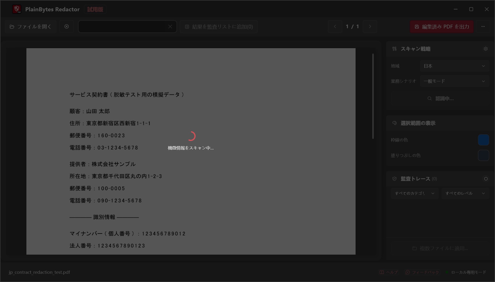
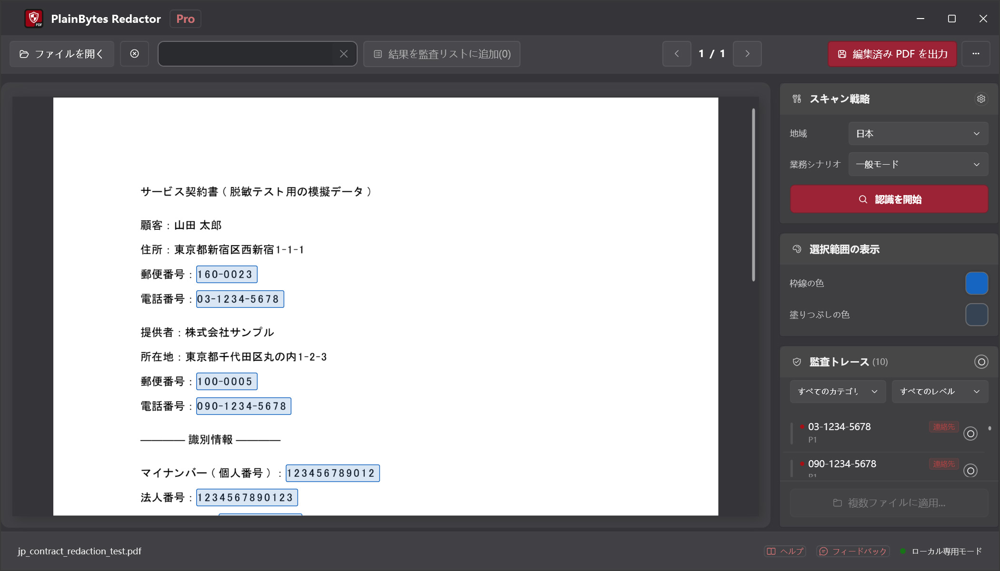
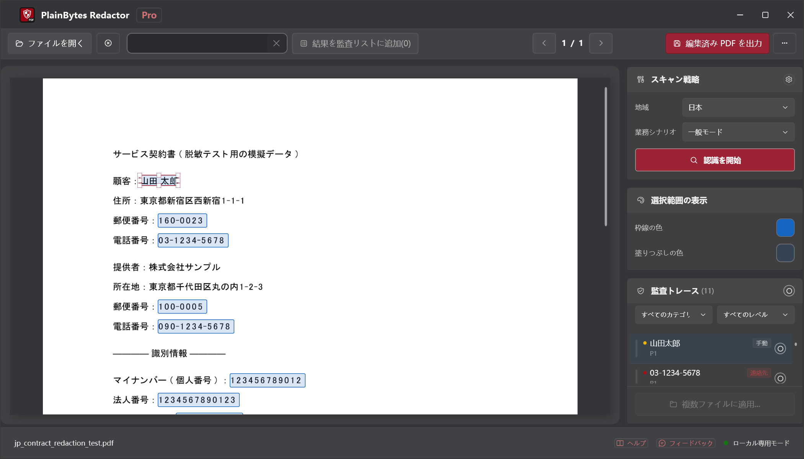
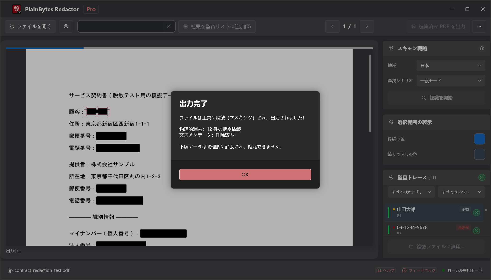

01
開いてスキャン
PDF を読み込み、お住まいの地域の形式で検出を実行します。
PlainBytes Redactor
PlainBytes Redactor はすべてお使いの PC 上で動作します。クラウドへのアップロードも、ファイルを見る AI サービスもありません。28 か国・地域の識別子形式を自動検出し、エクスポート前に手動レビューできます。
10 日間全機能無料トライアル · 買い切り · サブスクなし
仕組み

PDF を読み込み、お住まいの地域の形式で検出を実行します。

リスクカテゴリ付きですべてのフラグ項目を表示します。

確定前に追加・削除・微調整ができます。

コンテンツとメタデータを恒久的に削除します。
多くの編集ツール、特に AI 駆動のものは、機密情報を見つけて削除する前に文書をサーバーにアップロードします。守秘義務、特権、監査独立性のルールに縛られる方にとって、ファイル編集のためにそのリスクを負う必要はありません。
PlainBytes Redactor は検出と処理をすべてお使いのデバイス上で行います。ファイルは PC から出ず、アカウント、同期、サーバーも不要です。
コンプライアンス
主要なデータ保護フレームワークに沿ったローカル優先アーキテクチャ——処理中の第三者へのデータ送信はありません。
個人情報の安全管理措置および削除要件をサポートします。PDFのコンテンツストリームから個人データを完全に削除し、処理中に第三者へのデータ転送は一切行いません。
安全管理措置特定個人情報（マイナンバー）を含む文書の適切な取り扱いをサポートします。オフライン処理により、機密性の高い番号情報が外部サーバーに送信されることなく、安全に削除できます。
特定個人情報の保護プライバシー保護は製品設計の中核に組み込まれています。ローカル処理、物理的なデータ削除、クラウド非依存の設計により、「設計段階からのプライバシー保護」の原則を実現しています。
設計段階からの保護注：PlainBytes Redactorは、個人情報保護に関するワークフローをサポートするツールです。法的アドバイスを構成するものではなく、第三者機関による正式な認証は取得していません。
弁護士向け
電子提出やディスカバリー共有前に SSN、財務情報、その他 PII を編集。クライアントファイルを第三者クラウド経由にしません。
会計士向け
監査調書、税務申告、期末報告書を共有する前に、口座番号、SSN、顧客の財務情報を編集。顧客データを第三者クラウド経由にしません。
人事向け
監査人、法務担当者への共有やデータ開示請求への対応前に、オファーレター、退職記録、人事ファイルから給与、SSN、個人情報を編集します。